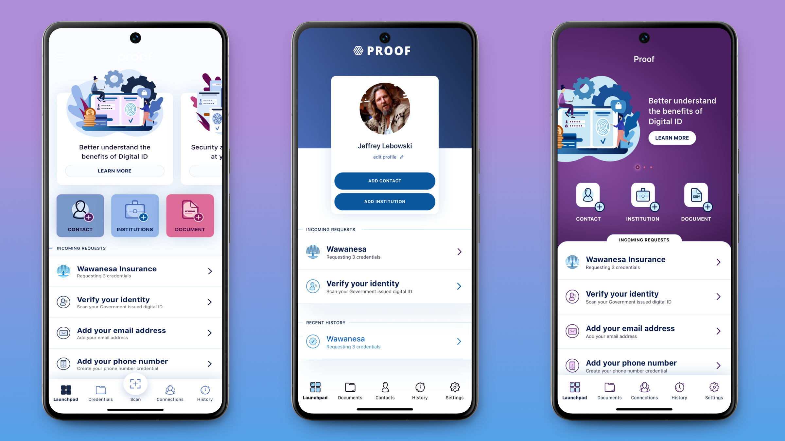
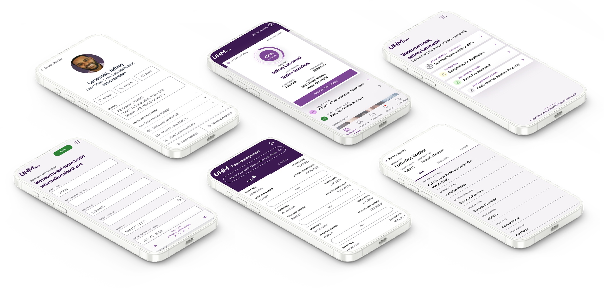
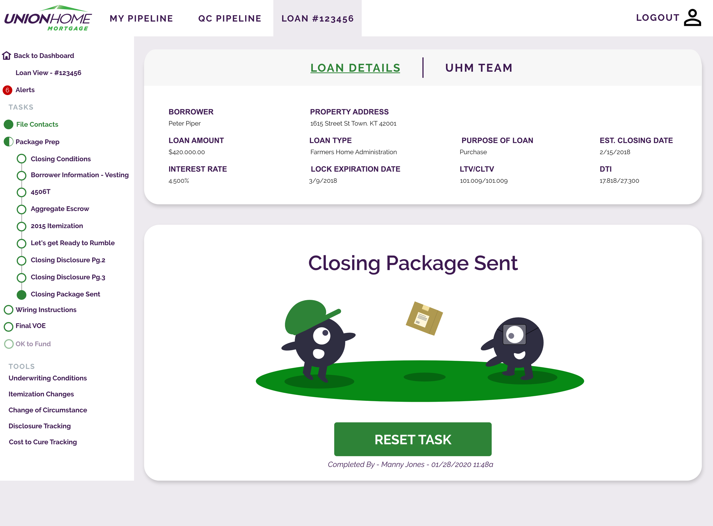
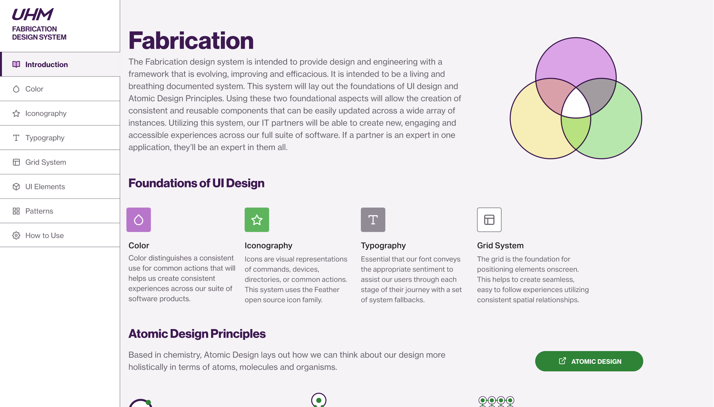

Sensitive information needs more than security, it needs clarity.
View project
Union Home Mortgage · UI kit and design system
Union Home Mortgage was building a set of internal applications to replace parts of a larger, more complex lending platform. Each tool was being developed independently, with little shared structure across the experience. As the number of applications grew, so did the gaps between them.

Interfaces varied widely from one application to another, with no shared patterns for layout, hierarchy, or interaction. For a team made up primarily of backend engineers, usability and presentation weren't a primary focus, leading to inconsistency and added cognitive load for users.
Without a shared structure, every decision had to be made from scratch. That made the applications harder to build, harder to scale, and ultimately harder to use.

The goal was to introduce a shared foundation that would bring consistency to the UI, reduce decision-making overhead, and make it easier to build new applications.
That meant building components atomic enough for a backend-heavy team to implement without a designer in the room, and locking down type, color, and grid so nobody had to make those decisions twice.
I built a UI kit and design system to support real development workflows, focusing on reusable components, clear patterns, and straightforward implementation.
Working closely with a backend-focused team, I focused on making the system something they could rely on, not something they had to interpret.

A modular approach that broke interfaces down into fundamental components, keeping them consistent and reusable.
A consistent structure for organizing content, so every layout stayed visually coherent across applications.
A grotesk sans-serif typeface chosen for legibility and scalability, with clear hierarchy through data-heavy content.
A shared color scale from the brand's primary and secondary colors, checked automatically against the WCAG 2.0 4.5:1 contrast ratio.
Shared components reduced the need to recreate patterns across applications, improving efficiency and alignment.
Layouts and hierarchy became more predictable, making interfaces easier to scan and understand. Tools that had previously felt disconnected now felt like part of the same system.
With a shared system in place, new applications could be built more efficiently and with greater consistency.
The experience became easier to navigate and more reliable for internal users, while reducing the effort required from the team to design and build each new tool.

